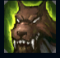
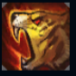
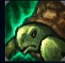
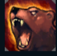
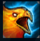

Udyr
| Udyr The Spirit Walker | |
|---|---|
| Release date | 02.12.2009 |
| Class | Juggernaut |
| Positions | Jungle |
| Resource | Mana |
| Range type | Melee |
| Adaptive type | Physical |
| Base statistics | |||
| Health | 594 – 2277 | Mana | 271 – 1121 |
| Health regen. | 6 – 18.75 |
Mana regen. | 7.5 – 15.15 |
| Armor | 34 – 102 | Attack damage | 66 – 151 |
| Magic resist. | 32 – 53.25 | Crit. damage | 175% |
| Move. speed | 350 | Attack range | 125 |
Udyr este mai mult decât un om – este purtătorul puterii neîmblânzite a patru spirite animale primordiale. Îmbrățișând natura sălbatică a spiritelor, Udyr le poate folosi puterile: tigrul îi dă viteză și ferocitate, broasca țestoasă îi dă rezistență, ursul îi dă forță, iar phoenixul îi acordă flacăra eternă. Cu ajutorul acestor puteri, Udyr îi înfruntă pe toți cei ce amenință să tulbure ordinea firească a lucrurilor. |  |
AGILITATE DE MAIMUȚĂ După ce folosește o abilitate, Udyr primește bonusuri cumulative la viteza de mișcare și viteza de atac. Udyr are patru abilități de bază pe care le poate folosi pentru a schimba ipostaza. Schimbarea ipostazei încheie imediat efectul pasiv și la impact al ipostazei anterioare. |
||
|---|---|---|---|---|
 |
IPOSTAZĂ DE TIGRU Ipostază de tigru: activare – timp de câteva secunde, Udyr primește un bonus la viteza de atac. Efect persistent: primul atac de bază și fiecare al treilea atac ulterior ale lui Udyr vor provoca o cantitate mare de daune de-a lungul a 2 secunde. |
|||
 |
IPOSTAZĂ DE ȚESTOASĂ Ipostază de țestoasă: activare – Udyr primește temporar un scut care absoarbe daune. Efect persistent: la primul atac de bază și fiecare al treilea atac ulterior, Udyr își vindecă 2,5% din viața maximă. |
|||
|  |
IPOSTAZĂ DE URS Ipostază de urs: activare - Udyr crește viteza de mișcare pentru o scurtă durată. Efect persistent - atacurile de bază ale lui Udyr amețesc ținta timp de 1 secundă. Acest efect nu se mai poate produce asupra aceleiași ținte în următoarele secunde. |
|||
 |
IPOSTAZĂ DE PHOENIX Ipostază de phoenix: activare – Udyr dezlănțuie valuri de foc, provocându-le daune inamicilor din apropiere. Efect persistent: la primul atac de bază și la fiecare al treilea atac ulterior, Udyr învăluie în flăcări inamicii din fața lui. |